App para iPhone, iPad y Android
Que nada se venza en la alacena.
Sacale una foto al envase y Vencito lee la fecha de vencimiento. Te avisa antes de que caduque y te muestra qué conviene usar primero.
Muy pronto en el App Store y en Google Play · Gratis · iOS y iPadOS 17 o posterior · Android 8 o posterior
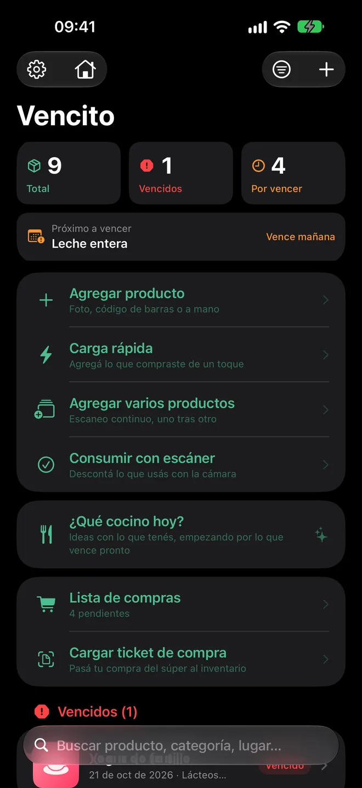
Cómo funciona
De la góndola a la heladera, en tres pasos
Sacale una foto
Al envase, donde se vea la fecha. O apuntá la cámara en vivo: lee el código de barras y la fecha a la vez. Podés sumar más fotos: producto, código y vencimiento.
Vencito completa el resto
Lee la fecha, sugiere el nombre y la categoría, y si hay código de barras busca el producto en Open Food Facts y en sus bases de cosmética y otros productos. Vos revisás y guardás.
Te avisa a tiempo
Una notificación por día, a la hora que elijas, con lo que está por vencer: por defecto 30, 15, 7, 3 y 1 día antes.
Probalo acá
Escribí lo que dice el envase
Esta es una versión simplificada del lector de fechas de la app. Entiende los formatos que se ven en los envases y prioriza la fecha de vencimiento por sobre la de elaboración.
Fecha de vencimiento
—
—Funciones
Pensada para la alacena, la heladera y el botiquín
Lector de fechas
VTO 14/02/27, 25-08-2026, 25 AGO 2026, 08/2027, VTO 04/27… Distingue vencimiento de elaboración y entiende envases en seis idiomas.
Código de barras
Escaneo en vivo o desde la foto, con códigos EAN, UPC y QR. Con Open Food Facts (y sus bases de cosmética y otros productos, como medicamentos de venta libre) completa el nombre, la marca y la categoría.
¿Qué cocino hoy?
Recetas con lo que tenés, empezando por lo que vence pronto. Un catálogo propio de más de 1.000 platos comunes y fáciles de varios países, con foto y en tu idioma, para desayuno, merienda, almuerzo y cena, con modo cocina y recetas guardadas. Funciona sin internet.
Varias casas
Cargá los productos de más de una casa y elegí cuál ver o ver todas juntas. Los avisos y el widget juntan los vencimientos de todas.
Lista de compras
Anotá lo que necesitás comprar, sumá con un toque lo que te falta para una receta o dejá que se agregue solo lo que se termina. Tildás lo comprado y la compartís como texto.
Cargar varios seguidos
Escaneo continuo: código de barras, fecha y listo. Si la fecha no se lee con seguridad, te pide confirmarla antes de guardarla.
Consumir con escáner
Apuntá al código de barras o QR del producto que usaste y descuenta una unidad del que vence antes. Seguís con el próximo sin tocar la pantalla.
Cargar el ticket del súper
Con una foto (de la cámara o la galería) o un PDF: lee los renglones, ignora impuestos y pagos, estima el vencimiento de cada producto y, si el ticket trae el código de barras, busca el nombre real.
Cocinar con ChatGPT
En una receta, compartí la foto y las instrucciones con un toque: elegís ChatGPT, lo enviás, activás el modo voz y te guía paso a paso, con las porciones que elegiste.
Sin fecha de vencimiento
Para lo que no vence o no tiene fecha: se guarda aparte, sin avisos.
Escaneo en vivo
Con un solo encuadre lee el código de barras, la fecha de vencimiento y el nombre del envase. Confirma cada dato recién cuando se repite, para evitar lecturas borrosas.
Varias fotos por producto
Guardá una foto del producto, otra del código de barras, otra del vencimiento y las que quieras. Se ven en una galería deslizable.
Widgets
En la pantalla de inicio y la bloqueada, con lo próximo a vencer. Tocás un producto y se abre en la app.
Estados de un vistazo
Vencidos, por vencer y próximos, con un resumen arriba y una miniatura de cada producto.
“Consumido” con un gesto
Deslizás y descuenta una unidad o saca el producto. Si te equivocás, agitás el iPhone para deshacer.
iPad
Lista y detalle lado a lado, en cualquier orientación y con multitarea. Con teclado, ⌘N agrega un producto.
Seis idiomas
Español, inglés, portugués (Brasil), francés, italiano y alemán. Se cambia desde Ajustes, al instante.
Accesible
Compatible con VoiceOver y con tamaños de letra grandes. Cada producto se lee completo: nombre, estado y fecha.
Video
Vencito en 30 segundos
Los productos a la vista, el escaneo en vivo del código de barras y la fecha, y recetas con lo que tenés.
El escaneo del video es una simulación ilustrativa.
Recetas
Un vistazo al catálogo
Más de 1.000 platos comunes y fáciles de varios países, cada uno con su foto. Estos son algunos.
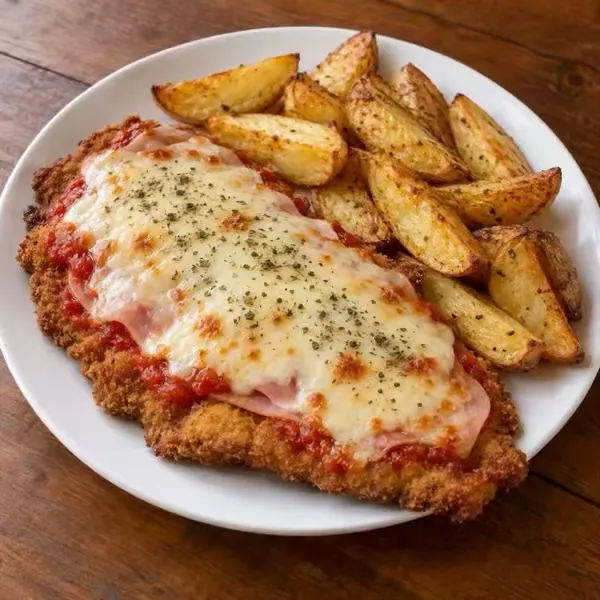
Milanesa a la napolitana
🇦🇷 · 40 min
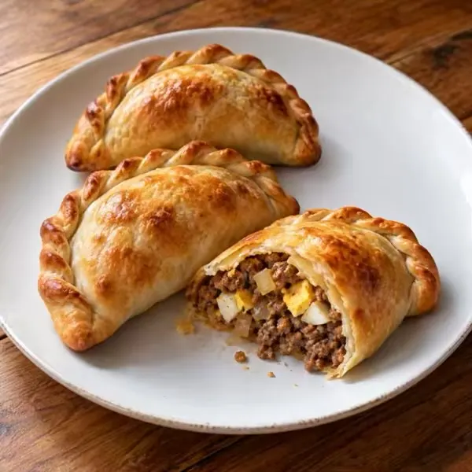
Empanadas de carne al horno
🇦🇷 · 55 min
Chivito
🇺🇾 · 25 min
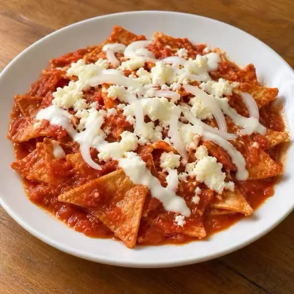
Chilaquiles rojos
🇲🇽 · 25 min
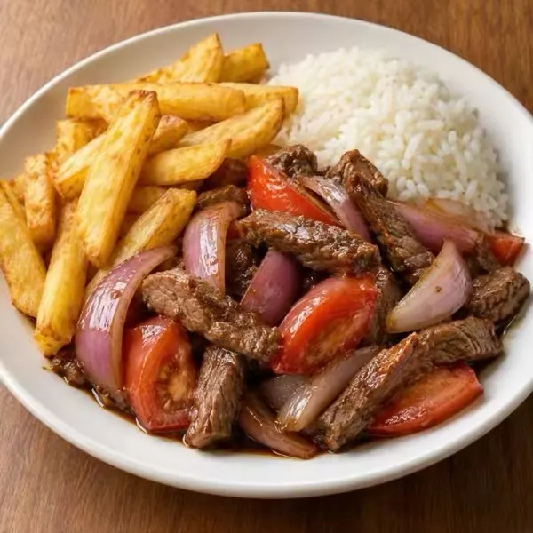
Lomo saltado
🇵🇪 · 25 min
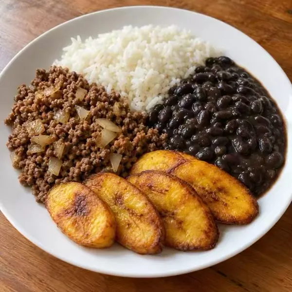
Pabellón criollo
🇻🇪 · 50 min
Arepas con queso
🇨🇴 · 25 min
Pastel de choclo
🇨🇱 · 60 min
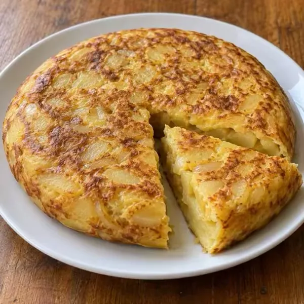
Tortilla de patatas
🇪🇸 · 35 min
Oyakodon
🇯🇵 · 25 min
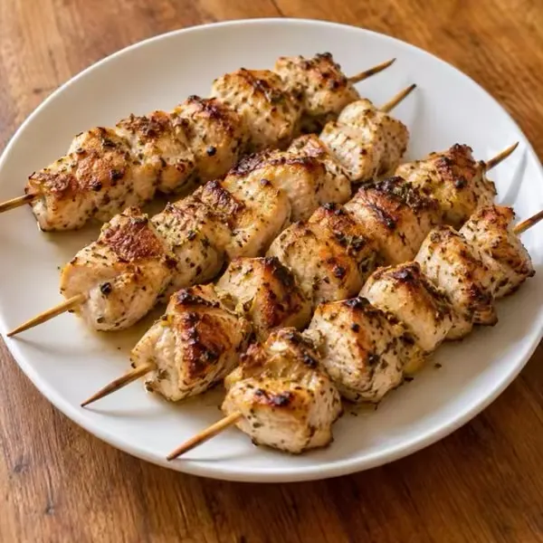
Souvlaki de pollo
🇬🇷 · 30 min
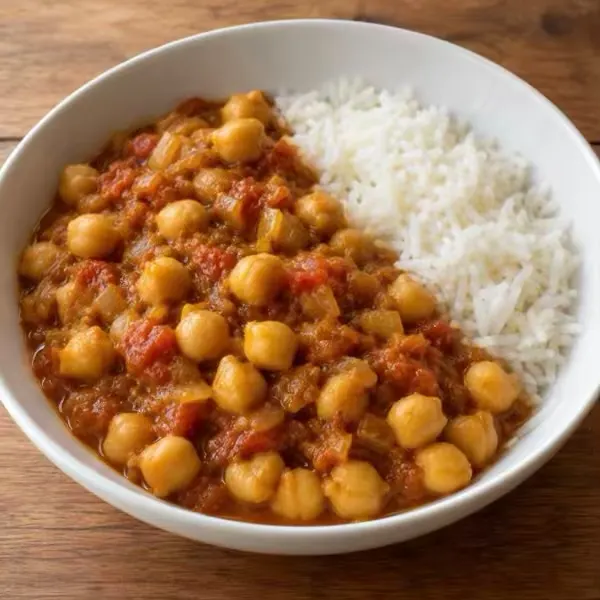
Chana masala
🇮🇳 · 30 min
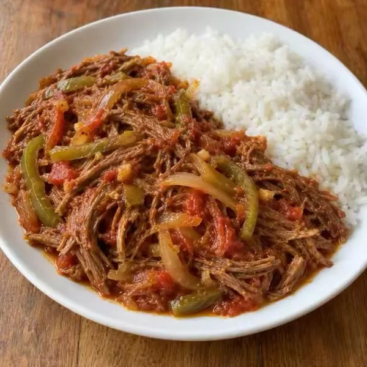
Ropa vieja
🇨🇺 · 60 min
Sopa paraguaya
🇵🇾 · 50 min
Mac and cheese
🇺🇸 · 30 min
Panqueques esponjosos
🇺🇸 · 20 min
Las recetas se sugieren con lo que tenés y lo que vence primero.
Capturas
Así se ve
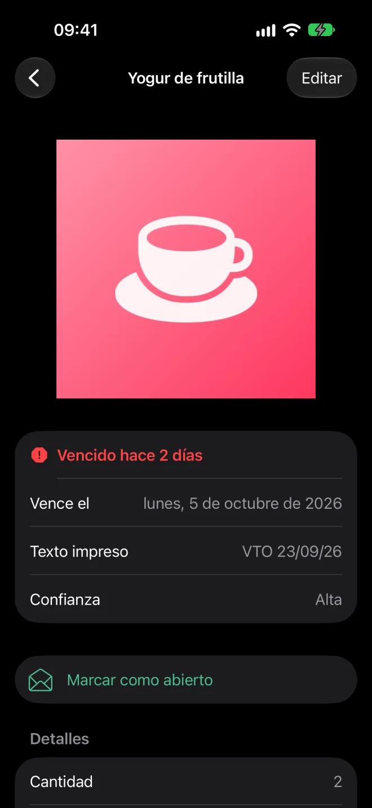
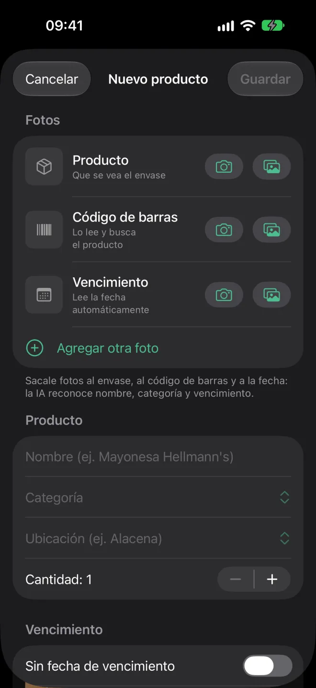
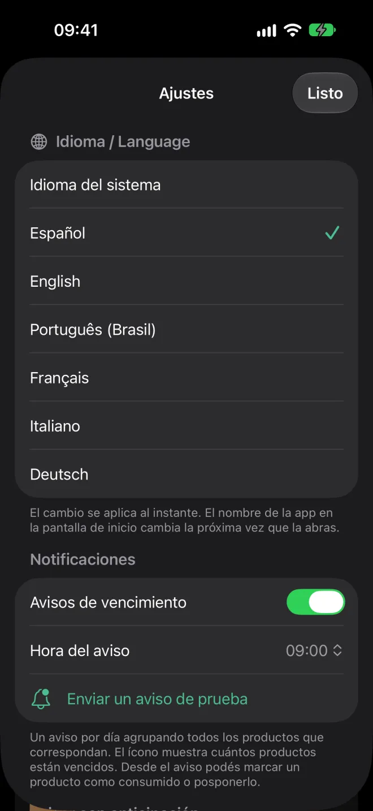
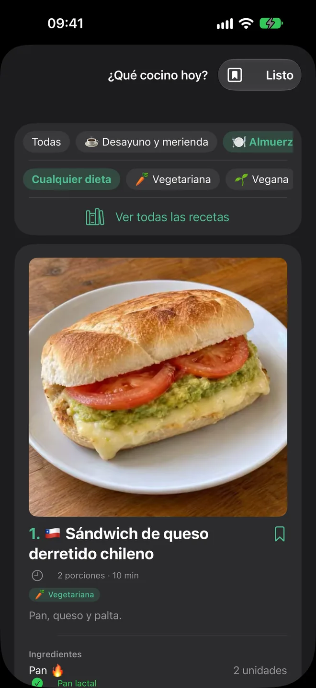
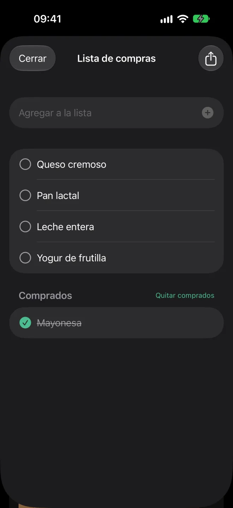
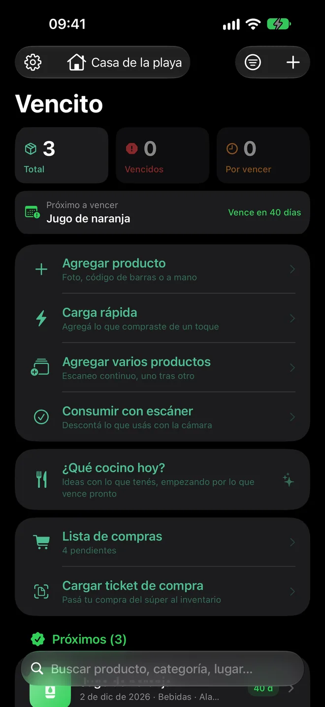
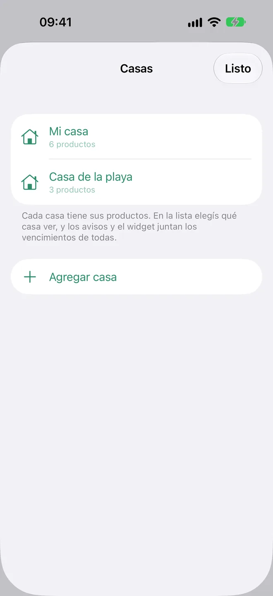
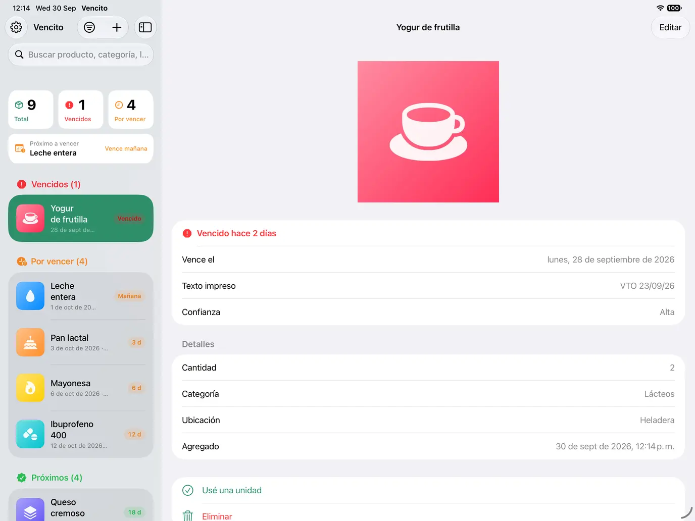
En iPad, la lista y el detalle quedan lado a lado.
Privacidad
Tus datos se quedan en tu iPhone
Vencito no tiene cuentas, servidores propios, analíticas ni publicidad.
Todo en el dispositivo
Los productos, las fotos y los ajustes se guardan en tu iPhone o iPad. Si activás la sincronización con iCloud, también en tu iCloud privado (el desarrollador no tiene acceso).
Se lee en el dispositivo
El texto de las fotos y los códigos de barras se leen en el dispositivo con el reconocimiento de Apple.
Un solo dato sale, y es opcional
Para buscar un producto se envía únicamente el número del código de barras a Open Food Facts y a sus bases hermanas. Se puede desactivar.
Avisos locales
Las notificaciones las programa el propio iPhone. No pasan por ningún servidor.
Preguntas frecuentes
Lo que suelen preguntar
¿Cuánto cuesta?
Es gratis y no tiene funciones bloqueadas.
¿Funciona sin conexión?
Sí. Solo la búsqueda del producto por código de barras necesita internet.
¿Puedo pasar mis datos a otro teléfono?
Sí. En Ajustes podés exportar un archivo con todos tus productos (con o sin fotos) e importarlo en otro dispositivo.
¿Qué pasa si la fecha dice solo mes y año?
La app toma el último día de ese mes, que es como se interpreta en los envases. Entiende tanto 08/2027 como VTO 04/27.
¿Puedo guardar más de una foto por producto?
Sí. Además de la foto principal, podés agregar una del código de barras, una del vencimiento y hasta 8 más. Se ven deslizando en el detalle y se incluyen al exportar.
¿Otra duda o un problema? Escribinos en soporte.